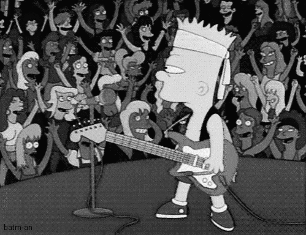

Meu hobby favorito é tocar instrumentos de cordas e tocar junto com a banda, meu sonho e viver da música e ser um músico profissional, eu toco 4 instrumentos de corda, cavaco , baixo, violão e guitarra, só que o meu preferido é a guitarra com o som mais agressivo
A guitarra é um instrumento musical semelhante ao violão, só que tocado de jeito diferente: as cordas costumam ser pinçadas, e não dedilhadas. ... Existem a guitarra acústica, com caixa de ressonância, e a elétrica, com ou sem caixa de ressonância. Elas têm forma bastante semelhante à do violão, com cabeça, braço e corpo.
O impacto sofrido pela pandemia foi não poder mais tocar com a banda nem em casa tinha que treina sem a caixa para não incomoda meus familiares
Marcas mais famosas de guitarra
Fender.
Guibson.
Ibanez
Epiphone
Yamaha
| Guitarristas que me inspiram |
|---|
| Eric Clapton |
| Eddie Van Halen |
| David Gilmour |
|  |